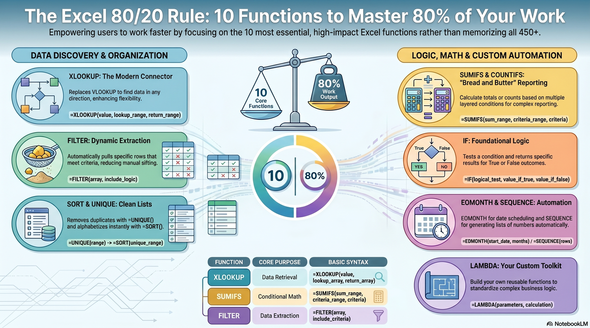
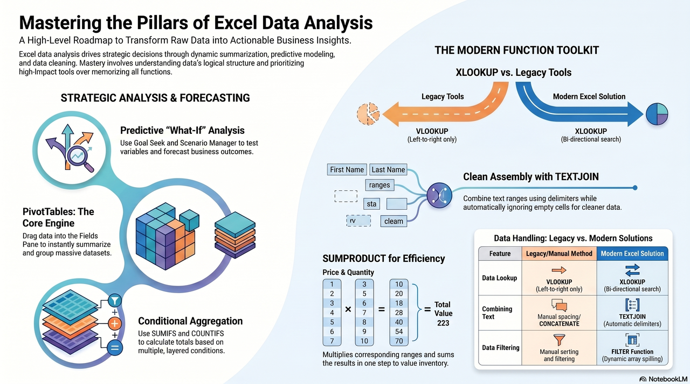

Excel Functions for Business Analysis
From basic arithmetic to the 80/20 function toolkit for clean, fast, decision-ready analysis.
that answer
business questions
write formulas with arithmetic operators, functions, ranges, and cell references.
summarize a dataset with SUM, AVERAGE, MAX, MIN, COUNT, and COUNTA.
select analysis functions based on the business question, not the function name.
audit formulas for logic, missing data, and wrong reference behavior.
Functions are wrappers around references.
If students understand relative and absolute references, they already understand the hardest part of function work.
Think Like a Function Builder
Before the big toolkit, students need the pattern every Excel formula follows.
Manual formula
Function formula
=B2+C2=B2-C2=B2*C2=B2/C2=B2^2()^* /+ -Name
What task Excel performs.
Arguments
The inputs Excel needs.
Result
The answer Excel returns.
Copying changes unlocked references.
| Reference | Behavior |
|---|---|
| B2 | Moves when copied |
| $B$2 | Always points to B2 |
| $B2 | Column stays B |
| B$2 | Row stays 2 |
| Sheet2!B2 | Pulls from another sheet |
=SUM(F7:F18)Raw Data
Anchor & Oak revenue export. Students should reference it, not edit it.
Event Revenue Analysis
Build linked formulas, totals, averages, and business summaries.
Challenge
Stretch into absolute references and IF flags.
Reference Card
Keep function syntax visible while working.
Core Function Muscles
Start with the functions that summarize business data before it becomes a decision.
Question
What was Anchor & Oak's annual revenue?
| Month | Revenue |
|---|---|
| Jan | $35,700 |
| Feb | $21,400 |
| Mar | $29,500 |
| Apr | $43,300 |
| May | $54,600 |
| Jun | $67,200 |
| ... | ... |
| Total | =SUM(F7:F18) |
Multiply
Divide
Average monthly revenue is a benchmark, not a verdict.
Peak
=MAX(F7:F18)Best month to study for repeatable wins.
Low Point
=MIN(F7:F18)Slowest month to plan cash flow and staffing.
Counting the header row or hard-coding the total
A formula can look clean and still answer the wrong question.
=COUNT(F6:F18)Includes the header row area.=COUNT(F7:F18)Starts on the first data row.COUNT
How many cells contain numbers?
=COUNT(F7:F18)COUNTA
How many cells contain anything?
=COUNTA(B7:B18)COUNTBLANK
How many cells are still empty?
=COUNTBLANK(F7:F18)The 80/20 Data Analysis Toolkit
These are the high-impact functions students will reuse in almost every business spreadsheet.
Tidal Goods Co. wants category sales without manually filtering the table.
| Category | Region | Sales |
|---|---|---|
| Kitchen | North | $8,400 |
| Storage | North | $5,100 |
| Kitchen | South | $3,900 |
| Kitchen | North | $6,200 |
Counting answers a different question than summing.
Lookup means connect one table to another.
Compared with legacy lookup tools, XLOOKUP is more flexible and less brittle.

| Employee ID | Name |
|---|---|
| M101 | Ari |
| M102 | Blake |
| M103 | Casey |
Business question
Which pay rate belongs to employee M102?
Harborside wants only records where payer type is Medicare and balance is above $500.
Unique values
Sorted values
Modern Add-Ons for Analysis
Not every function is first-day essential, but a few unlock cleaner models and faster reporting.
Anchor & Oak wants package labels that combine event type, city, and planner without awkward blanks.
Meridian Advisory Group closes payroll on the last day of each month.
Harborside needs shift numbers 1 through 12 without typing each row.
Tidal Goods Co. needs inventory value across products with different quantities and costs.
| Item | Qty | Cost |
|---|---|---|
| Tote | 20 | $18 |
| Mug | 45 | $7 |
| Apron | 12 | $22 |
| Total | =SUMPRODUCT(...) |
Messy
Readable

We are skipping Lambda today.
Reusable custom functions are powerful, but they are not the first 80 percent for BUS123.
Decision Drills
Now the question is not whether students can type formulas. It is whether they can choose the right tool.
Anchor & Oak Events
Summarize monthly event revenue.
SUM / AVERAGE / MAX / MINTidal Goods Co.
Value inventory and category sales.
SUMIFS / SUMPRODUCTMeridian Advisory Group
Connect employees to rates and payroll dates.
XLOOKUP / EOMONTHHarborside Medical Center
Extract records and count exceptions.
FILTER / COUNTIFSWhich function returns all Harborside patient rows where balance is above $500?
Choose before revealing.
Question 1
When would a perfectly typed formula still be a bad business answer?
Question 2
Which function from today would save you the most manual work in another class or job?
Formula Reference Card
Same rows as the starter workbook FormulaReferenceCard tab.
| Concept | Excel Pattern | Plain-English Meaning | Watch Out For |
|---|---|---|---|
| SUM | =SUM(range) | Adds numeric values in a range. | Confirm the range includes all rows. |
| AVERAGE | =AVERAGE(range) | Returns the mean of a numeric range. | Blank cells are skipped. |
| IF | =IF(test,value_if_true,value_if_false) | Returns one result when a test is true and another when false. | Write the test before choosing outputs. |
| COUNTIFS | =COUNTIFS(criteria_range,criteria) | Counts rows that meet criteria. | Each criteria range must be the same size. |
| XLOOKUP | =XLOOKUP(lookup_value,lookup_array,return_array) | Finds a matching record and returns the related value. | Lookup and return arrays must line up by row. |
| FILTER | =FILTER(array,include) | Spills only the rows that meet the filter rule. | A spilled result needs empty cells below. |
Functions are named formulas that turn ranges into answers.
The business question should choose the function.
Modern Excel rewards clean structure: tables, ranges, criteria, and spill results.
Next we make analysis easier to read.
Once formulas produce answers, charts and visual structure help business users understand the story.
Questions?
Bring the workbook forward. We will practice choosing, writing, copying, and auditing functions.